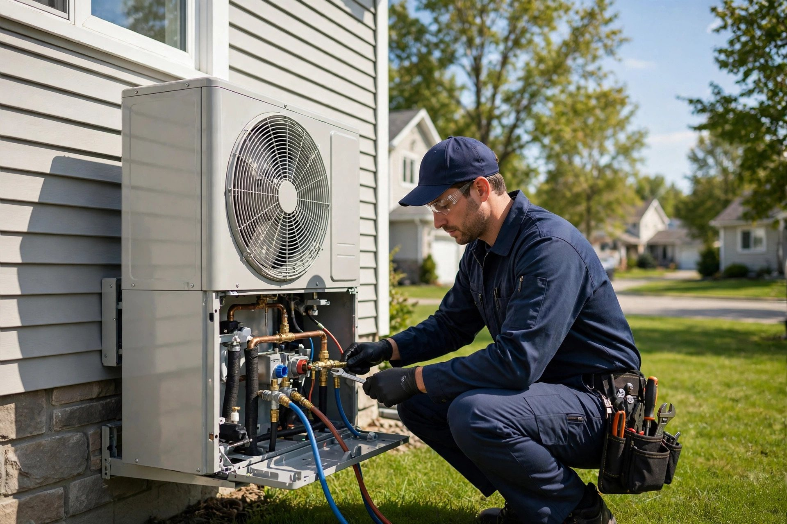
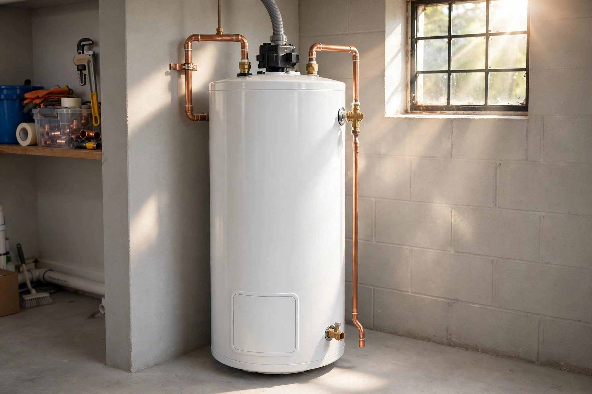
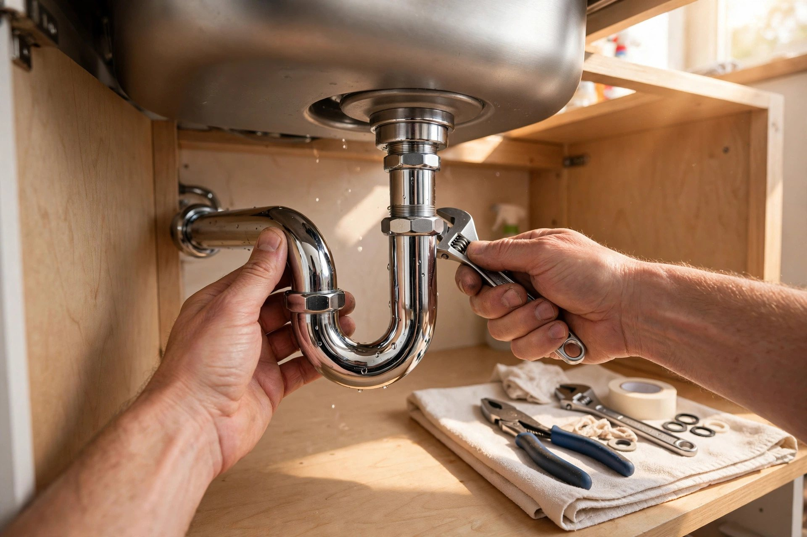

Plomberie résidentielle
Installation, réparation et entretien pour votre maison — du robinet au drain principal.
Saint-Paul, Québec · Plomberie · Chauffage · Climatisation
Plomberie et systèmes de chauffage-climatisation pour votre maison — un entrepreneur local de Saint-Paul, un travail propre fait dans les règles de l'art.
Ce que nous faisons
Installation, réparation et entretien pour votre maison — du robinet au drain principal.
Détection et réparation de fuites d'eau et de tuyaux, pour éviter les dégâts coûteux.
Installation, remplacement et réparation de chauffe-eau — pour une eau chaude fiable.
Drains et égouts débouchés efficacement, à l'intérieur comme à l'extérieur.
Fournaise, thermopompe et systèmes de chauffage — installation, réparation et entretien.
Installation et entretien de climatiseurs pour un été confortable dans toute la maison.

Pourquoi nous choisir
Plomberie et chauffage-climatisation sous un même toit : un seul interlocuteur à Saint-Paul pour votre eau et votre confort thermique. Travail propre, prix expliqués d'avance.
Sur le terrain


Venez nous voir
Bon à savoir
Appelez-nous au (450) 755-1302 pour une fuite ou un dégât d'eau. On se déplace à Saint-Paul et dans les environs.
Oui — installation, remplacement et réparation de chauffe-eau, avec des appareils fiables.
Oui — installation, réparation et entretien de thermopompes, fournaises et climatiseurs.
À Saint-Paul et dans les environs — appelez-nous au (450) 755-1302 pour vérifier votre secteur.
Contactez-nous